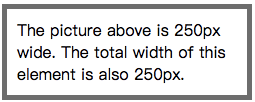

盒子模型，也可以称为框模型。
所有 HTML 元素可以看作盒子。在 CSS 中，"box model" 这一术语是用来设计和布局时使用。
CSS 盒模型本质上是一个盒子，封装周围的 HTML 元素，它包括：边距，边框，填充，和实际内容。
不同部分的说明:
为了在所有浏览器中的元素的宽度和高度设置正确的话，你需要知道的盒模型是如何工作的。
下面的例子中的元素的总宽度为 300px:
width:250px;
padding:10px;
border:5px solid gray;
margin:10px;完整的 HTML 代码如下:
<!DOCTYPE html>
<html>
<head>
<meta charset="utf-8">
<title></title>
<style>
div.ex
{
width:220px;
padding:10px;
border:5px solid gray;
margin:0px;
}
</style>
</head>
<body>
<div class="ex">The picture above is 250px wide.
The total width of this element is also 250px.</div>
</body>
</html>上述示例运行的结果如下:

值得注意的是: 当指定一个 CSS 元素的宽度和高度属性时，只是设置内容区域的宽度和高度。要知道，完全大小的元素，还必须添加填充，边框和边距。
CSS 边框属性允许指定一个元素边框的样式和颜色。
CSS 边框属性常见如下:
如果设置一个值，则同时设置边框的四个方向的宽度。如下代码:
border-width: 10px;上述代码则表示同时四个方向的边框宽度为 10px。
如果设置两个值，则第一个值表示设置边框的上下方向宽度，第二个值表示设置边框的左右方向宽度。
border-width: 10px 20px;如果设置三个值，则第一个值表示设置边框的上边宽度，第二个值表示设置边框的左右方向宽度，第三个值表示设置边框的下边宽度。
border-width: 10px 20px 30px;如果设置四个值，则分别表示设置上、右、下和左四个方向的边框宽度。
border-width: 10px 20px 30px 40px;除了上述方式设置边框宽度，CSS 还提供如下方式分别设置上、右、下和左边框的宽度。
| 属性名称 | 描述 |
|---|---|
| border-top-width | 设置一个元素的顶部边框的宽度。 |
| border-right-width | 设置一个元素的右边框的宽度。 |
| border-bottom-width | 设置一个元素的底部边框的宽度。 |
| border-left-width | 设置一个元素的左边框的宽度。 |
如果设置一个值，则同时设置边框的四个方向的颜色。如下代码:
border-color: red;上述代码则表示同时四个方向的边框颜色为 red。
如果设置两个值，则第一个值表示设置边框的上下方向颜色，第二个值表示设置边框的左右方向颜色。
border-color: red orange;如果设置三个值，则第一个值表示设置边框的上边颜色，第二个值表示设置边框的左右方向颜色，第三个值表示设置边框的下边颜色。
border-color: red orange yellow;如果设置四个值，则分别表示设置上、右、下和左四个方向的边框颜色。
border-color: red orange yellow blue;除了上述方式设置边框颜色，CSS 还提供如下方式分别设置上、右、下和左边框的颜色。
| 属性名称 | 描述 |
|---|---|
| border-top-color | 设置一个元素的顶部边框的颜色。 |
| border-right-color | 设置一个元素的右边框的颜色。 |
| border-bottom-color | 设置一个元素的底部边框的颜色。 |
| border-left-color | 设置一个元素的左边框的颜色。 |
边框样式的常用备选想如下:
| 边框样式 | 描述 |
|---|---|
| none | 定义无边框。 |
| hidden | 与 "none" 相同。不过应用于表时除外，对于表，hidden 用于解决边框冲突。 |
| dotted | 定义点状边框。在大多数浏览器中呈现为实线。 |
| dashed | 定义虚线。在大多数浏览器中呈现为实线。 |
| solid | 定义实线。 |
| double | 定义双线。双线的宽度等于 border-width 的值。 |
| inherit | 规定应该从父元素继承边框样式。 |
如果设置一个值，则同时设置边框的四个方向的样式。如下代码:
border-style: dotted;如果设置两个值，则第一个值表示设置边框的上下方向样式，第二个值表示设置边框的左右方向样式。
border-style: dotted solid;如果设置三个值，则第一个值表示设置边框的上边样式，第二个值表示设置边框的左右方向样式，第三个值表示设置边框的下边样式。
border-style: dotted solid dashed;如果设置四个值，则分别表示设置上、右、下和左四个方向的边框样式。
border-style: dotted solid dashed double;除了上述方式设置边框样式，CSS 还提供如下方式分别设置上、右、下和左边框的样式。
| 属性名称 | 描述 |
|---|---|
| border-top-style | 设置一个元素的顶部边框的样式。 |
| border-right-style | 设置一个元素的右边框的样式。 |
| border-bottom-style | 设置一个元素的底部边框的样式。 |
| border-left-style | 设置一个元素的左边框的样式。 |
CSS 提供了 border 属性允许同时设置边框的宽度、颜色和样式。
border: 5px solid red;值得注意的是: 设置的顺序没有明确要求。
除了上述方式设置边框，CSS 还提供如下方式分别设置上、右、下和左边框。
| 属性名称 | 描述 |
|---|---|
| border-top | 设置一个元素的顶部边框。 |
| border-right | 设置一个元素的右边框。 |
| border-bottom | 设置一个元素的底部边框。 |
| border-left | 设置一个元素的左边框。 |
CSS Padding（内边距）属性定义元素边框与元素内容之间的距离。
如果设置一个值，则同时设置内边距的四个方向。如下代码:
padding: 25px;如果设置两个值，则第一个值表示设置内边距的上下方向，第二个值表示设置内边距的左右方向。
padding: 25px 50px;如果设置三个值，则第一个值表示设置内边距的上边，第二个值表示设置内边距的左右方向，第三个值表示设置内边距的下边。
padding: 25px 50px 75px;如果设置四个值，则分别表示设置上、右、下和左四个方向的内边距。
padding: 25px 50px 75px 100px;除了上述方式设置内边距，CSS 还提供如下方式分别设置上、右、下和左边的内边距。
| 属性名称 | 描述 |
|---|---|
| padding-top | 设置一个元素的顶部内边距。 |
| padding-right | 设置一个元素的右边内边距。 |
| padding-bottom | 设置一个元素的底部内边距。 |
| padding-left | 设置一个元素的左边内边距。 |
CSS Margin（外边距）属性定义元素周围的距离。
外边距不会影响元素的可见大小，但是会影响元素的位置。
| 属性名称 | 描述 |
|---|---|
| margin-top | 设置元素的上外边距。 |
| margin-right | 设置元素的右外边距。 |
| margin-left | 设置元素的左外边距。 |
| margin-bottom | 设置元素的下外边距。 |
margin-top: 100px;
margin-left: 50px;由于元素在 HTML 页面中默认是靠左靠上显示的。所以默认情况下，修改左外边距和上外边距时，会影响当前元素的位置。
margin-bottom: 100px;
margin-right: 50px;修改右和下外边距时会影响其他元素相对于当前元素的位置。
如果设置一个值，则同时设置外边距的四个方向。如下代码:
margin: 25px;如果设置两个值，则第一个值表示设置外边距的上下方向，第二个值表示设置外边距的左右方向。
margin: 25px 50px;如果设置三个值，则第一个值表示设置外边距的上边，第二个值表示设置外边距的左右方向，第三个值表示设置外边距的下边。
margin: 25px 50px 75px;如果设置四个值，则分别表示设置上、右、下和左四个方向的外边距。
margin: 25px 50px 75px 100px;当同时为两个相邻的 <div> 标签设置外边距，为第一个 <div> 标签设置下外边距，为第二个 <div> 标签设置上外边距。具体代码如下:
<!DOCTYPE html>
<html>
<head>
<meta charset="UTF-8">
<title></title>
<style type="text/css">
.box1{
width: 100px;
height: 100px;
background-color: red;
/*为上边的元素设置一个下外边距*/
margin-bottom: 100px;
}
.box2{
width: 100px;
height: 100px;
background-color: blue;
/*为下边的元素设置一个上外边距*/
margin-top: 100px;
}
</style>
</head>
<body>
<div class="box1"></div>
<div class="box2"></div>
</body>
</html>上述示例代码，最终运行的结果是: 两个 <div> 之间的距离为 100px。
垂直方向的相邻的外边距会发生外边距的重叠现象，兄弟元素的相邻外边距会取最大值。
值得注意的是: 外边距的重叠现象只会出现在垂直方向，而水平方向并不存在外边距重叠现象。
如果定义两个 <div> 标签是父子关系的话，当为作为子元素的 <div> 设置上外边距，该上外边距会传递给作为父元素的 <div>。具体代码如下:
<!DOCTYPE html>
<html>
<head>
<meta charset="UTF-8">
<title></title>
<style type="text/css">
.box3{
width: 300px;
height: 200px;
background-color: skyblue;
}
.box4{
width: 100px;
height: 100px;
background-color: red;
/*设置一个margin-top*/
margin-top: 100px;
}
</style>
</head>
<body>
<div class="box3">
<div class="box4"></div>
</div>
</body>
</html>上述外边距的重叠现象，可以通过为作为父元素的 <div> 下内边距解决。
<!DOCTYPE html>
<html>
<head>
<meta charset="UTF-8">
<title></title>
<style type="text/css">
.box3{
width: 300px;
height: 100px;
background-color: skyblue;
padding-top: 100px;
}
.box4{
width: 100px;
height: 100px;
background-color: red;
}
</style>
</head>
<body>
<div class="box3">
<div class="box4"></div>
</div>
</body>
</html>内联元素不支持设置宽和高，内联元素元素的大小由内容决定。
内联元素支持水平方向的外边距 , 不支持垂直方向的外边距。
本笔记的内容免费开源，任何人都可以免费学习、分享，甚至可以进行修改。但需要注明作者及来源，并且不能用于商业。
本笔记采用知识共享署名-非商业性使用-禁止演绎 4.0 国际许可协议进行许可。